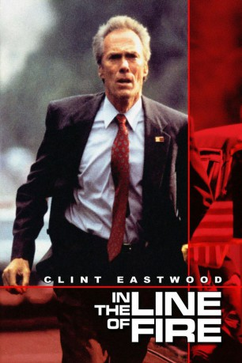

Auszeichnungen: für 3 Oscars nominiert
 gesehen am 30.11.2015
gesehen am 30.11.2015Alternativ: In the Line of Fire
Auszeichnungen: für 3 Oscars nominiert gesehen am 30.11.2015
 
 IMDB-Wertung: 7.2 / 10
IMDB-Wertung: 7.2 / 10  Metascore:
Metascore: 
Secret-Service-Agent Frank Horrigan hat ein Trauma: Dallas. Bis heute fühlt sich Frank als Ex-Sicherheitsbeamter J.F. Kennedys mitschuldig an dessen gewaltsamen Tod. Um so heftiger reagiert Frank, als ihm ein Attentäter telefonisch die Ermordung des gegenwärtigen Präsidenten ankündigt. Das Weiße Haus hält Frank für einen Wichtigtuer. Doch Franks schlimmste Befürchtungen werden wahr. Der Attentäter ist eine menschliche Killer-Maschine, ausgerüstet mit modernster Technik und kaltblütiger Skrupellosigkeit.
Jahr: 1993
Dauer: 128 Minuten
FSK: 16
Land: USA Studio: Columbia PicturesTonspuren: DTS - ,
Untertitel: Deutsch, Englisch,
Auflösung: 1080p (1920x800) Größe: 11673 MB
Genre: Action, Thriller, Drama, Krimi, Mystery
Regisseur:  Wolfgang Petersen
Wolfgang Petersen
Drehbuch: Jeff Maguire
Soundtrack: Ennio Morricone
Darsteller:
 Clint Eastwood als Frank Horrigan
Clint Eastwood als Frank Horrigan John Malkovich als Mitch Leary
John Malkovich als Mitch Leary Rene Russo als Lilly Raines
Rene Russo als Lilly Raines Dylan McDermott als Al D'Andrea
Dylan McDermott als Al D'Andrea Gary Cole als Bill Watts
Gary Cole als Bill Watts Fred Dalton Thompson als Harry Sargent
Fred Dalton Thompson als Harry Sargent John Mahoney als Sam Campagna
John Mahoney als Sam Campagna Gregory Alan Williams als Matt Wilder
Gregory Alan Williams als Matt Wilder Clyde Kusatsu als Jack Okura
Clyde Kusatsu als Jack Okura Steve Hytner als Tony Carducci
Steve Hytner als Tony Carducci Tobin Bell als Mendoza
Tobin Bell als Mendoza Arthur Senzy als Paramedic
Arthur Senzy als Paramedic Patrika Darbo als Pam Magnus
Patrika Darbo als Pam Magnus Ryan Cutrona als LAPD Brass
Ryan Cutrona als LAPD Brass Brian Libby als FBI Supervisor
Brian Libby als FBI Supervisor Eric Bruskotter als Young Agent
Eric Bruskotter als Young Agent John Heard als Professor Riger
John Heard als Professor Riger Carl Ciarfalio als CIA Agent Collins
Carl Ciarfalio als CIA Agent Collins Robert Peters als Hunter
Robert Peters als Hunter Joshua Malina als Agent Chavez
Joshua Malina als Agent Chavez Robert Alan Beuth als Man at Bank
Robert Alan Beuth als Man at Bank Lena Banks als Congretional Attendee , uncredited
Lena Banks als Congretional Attendee , uncredited Aaron Michael Lacey als Police Officer , uncredited
Aaron Michael Lacey als Police Officer , uncredited Steve Railsback als CIA Agent David Coppinger , uncredited
Steve Railsback als CIA Agent David Coppinger , uncredited Elsa Raven als Booth's Landlady
Elsa Raven als Booth's LandladyDatei: X:\1993\In the Line of Fire - Die zweite Chance (1993, FSK16, 1920x800).mkv seit 30.11.2015
Festplatte: HD 1992-1995
 Es gibt insgesamt 68 Filme in der Gruppe '1993'
Es gibt insgesamt 68 Filme in der Gruppe '1993'